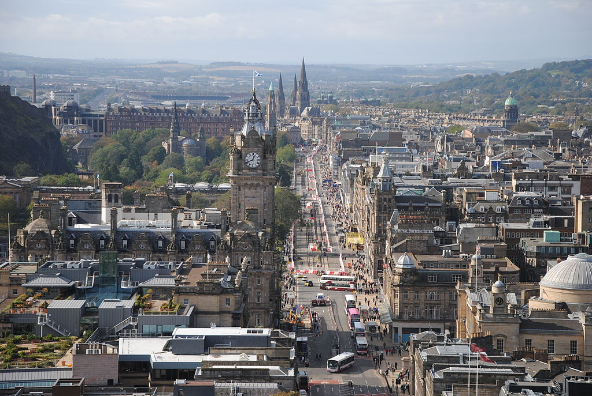
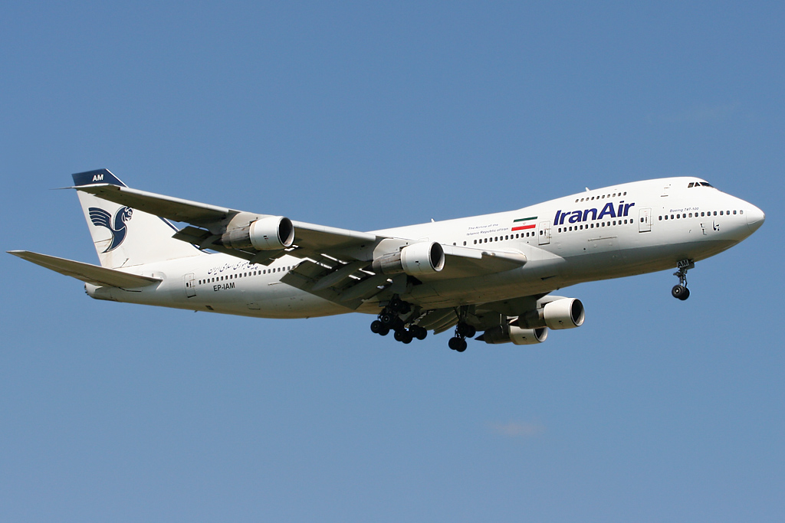

Opis lotu
Warszawa
-
Edynburg
Czas lotu:
2h

Samolot
Model: Boeing 747
Liczba miejsc: 366 
Lista pasażerów:
Jan Kowalski
Nr miejsca: 22
Stanisław Nowak
Nr miejsca: 11
Łukasz Kamiński
Nr miejsca: 31
Przedostatni pasażer
Nr miejsca: 23
Ostatni Pasażer
Powrót